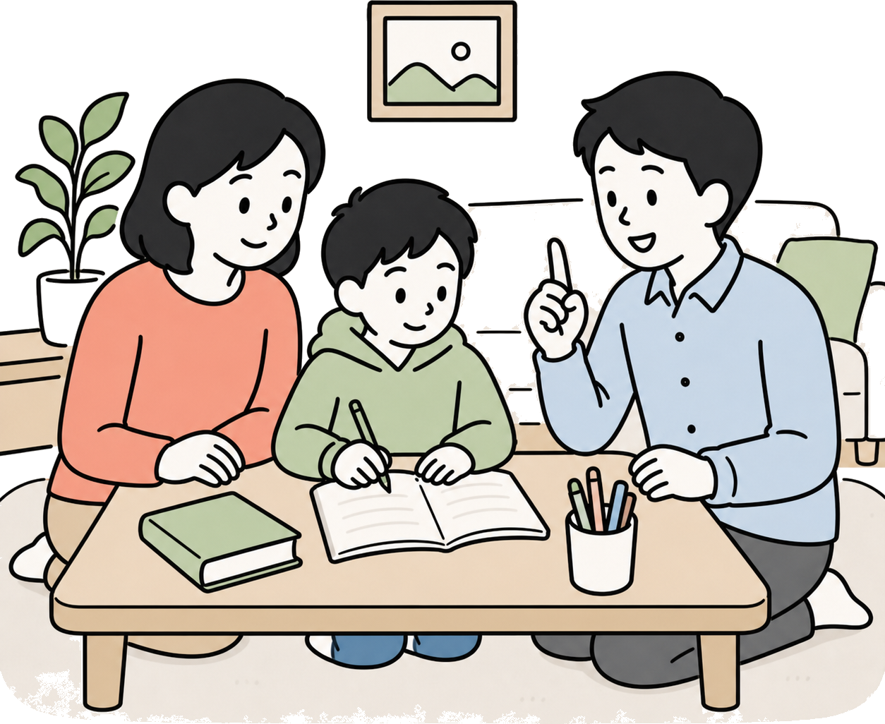
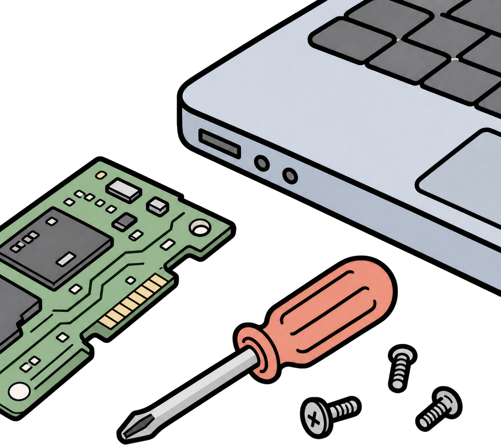

かわべ家庭教師学院
勉強のつまずきから、受験の相談まで。
豊橋・豊川・田原を中心に、学習状況に合わせた家庭教師・学習相談を案内します。

家庭教師・学習相談は「かわべ家庭教師学院」へ。
パソコン修理・データ復旧は「川辺コンピューター」へ。
内容に合わせて、下のタブからご確認ください。

パソコン修理の相談 パソコン修理へ 起動しない、遅い、データ復旧、設定の相談はこちら。かわべ家庭教師学院
豊橋・豊川・田原を中心に、学習状況に合わせた家庭教師・学習相談を案内します。
